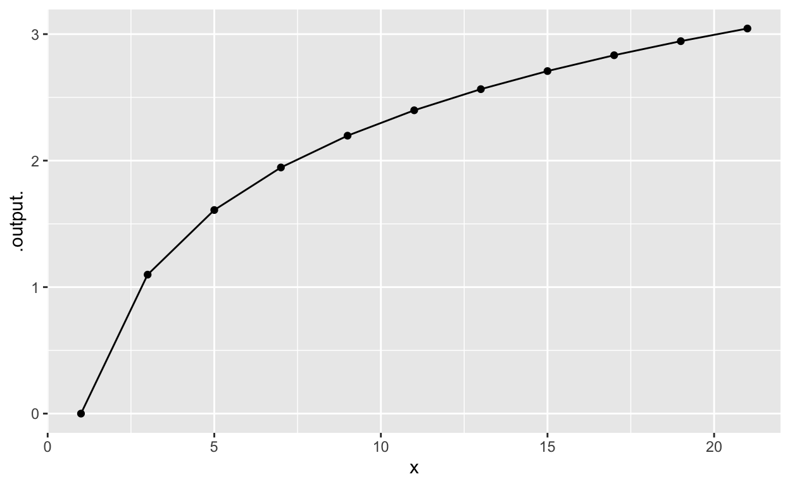

In the last Daily Digital, you were tasked with using your understanding of the algebra rules of differentiation to carry out anti-differentiation. Fortunately, it’s not too hard to do this when the function involved is one of our basic modeling functions with a linear interior function, e.g. \(\int e^{kx}dx = \frac{1}{k} e^{kx}\). Happy cases when this sort of algebraic integration can be done are found in textbooks. But outside of textbook situations, it’s common that there is no algebraic method of finding an anti-derivative. The clip below from the movie Hidden Figures shows one historically important example that had to be solved before the first manned space flight could be launched.
The method mentioned in the clip, the Euler Method, is super simple. So much so that we will use it to introduce, with only trivial algebra, the properties of anti-derivatives. (The Euler Method was published in 1768, but it is not a preferred method for modern uses of calculus. A much better method, Runge-Kutta, was published in 1901. The NASA engineers of the late 1950s and early 1960s undoubtedly knew of and used methods like Runge-Kutta, despite what the movie clip suggests.)
As you know, the result of applying the anti-differentiation operator to a function \(f(t)\) will be another function, which we often write \(F(t)\) simply to remind us where it came from. (So anti-differentiating \(g(t)\) would produce \(G(t)\), and anti-differentiating \(h(x)\) will produce \(H(x)\).)
The result of applying the Euler method to a function is also another function, but it comes in the form of a vector of numbers all ready to be displayed graphically. So keep in mind the the function produced by Euler will be known only over a specified domain, just as the graph of a function covers only the specified domain. For instance, here is the graph of the natural logarithm function over the domain \(1 \leq x \leq 21\).

The command in the sandbox is a little different than the usual slice_plot(). We’ve added on two things:
An argument npts=11 which says to use 11 discrete values of the input in plotting the graph.
A second graphics layer that shows a dot at each input point where slice_plot() evaluated the function. Behind the seemingly smooth curves that slice_plot() produces is really a discrete set of points each of which is the output of the function at some numerical input.
In our typical use of slice_plot() we leave out the dots and show only the straight line segments that connect the positions where the dots would be plotted. If the positions are spaced closely enough, your eye will not see the joints between successive straight lines and you will perceive the graph as a smooth curve.
Now take away the npts= argument. This will implicitly set npts to a default value, which is what we have been using for most plots in this course.
We could use a much larger value for npts, but there is no reason so long as a smaller value produces a graph faithful to the function being graphed.
Keeping the domain the same, \(1 \leq x \leq 21\), plot out a sinusoid with a period of 0.3 using the default npts: \(g(x) \equiv \sin(2\pi x/0.3)\). The graph, which shows about 67 cycles of the sinusoid, will not look much like a sinusoid. In particular, although the sine function should reach from -1 to 1 over each cycle, the graph does not.
The tilde expression that you type in the box defines a function \(f(x)\) which is displayed in the BOTTOM graph.
The top graph shows \(F(x) \equiv \int f(x) dx\). The \(F(x)\) function is drawnn as a light gray line because we want you mostly to ignore it. \(F(x)\) will be what we try to construct using the Euler method with just the information provided by \(f(x)\).
The Euler method applies over a defined domain \(a \leq x \leq b\) which you can set with the slider. Euler also uses a step-size \(h\) which you can choose with the drop-down menu. Keep \(h\) large until you understand how \(f(x)\) is used to draw the colorful segments drawn in the top graph.
From \(a\) and \(h\), a series of discrete values \(x_i = a + i h\) is constructed and \(f(x)\) is evaluated at each of those discrete values. This is shown graphically in the BOTTOM plot, with each dot positioned at the coordinates \((x_i, f(x_i))\). In the plot, color is also used to show \(f(x_i)\) so that you’ll be able to associate each \(f(x_i)\) value with the corresponding segment in the TOP plot.
Recall that \(f(x)\) is the slope of the anti-derivative function \(F(x)\) that we’re going to find using Euler’s method. In the top graph, those slopes—the information that we have from the dots in the bottom graph—are drawn as little segments. But the little segments are disconnected.
To assemble the segments into a continuous function, we move each sloped segment vertically (without changing the slope) to start at the end-point of the previous segment. You could do this one segment after the other, like stacking toy blocks into a tower. We’ve given you a slider that lets you gradually move the segments toward the connected whole.
The Euler approximation to \(F(x)\) gets better as the step size \(h\) gets smaller.
The output of a function, being a quantity, has dimension and units. Suppose the dimension of the output of a function \(v(t)\) is \(L/T\), for instance, meters-per-second.
The anti-derivative function \(V(t) \equiv \int v(t) dt\) will also have dimension and units.
Recall that in constructing the anti-derivative using the Euler method, we multiply the values of \(v(t)\) times some small increment in the input, \(h\). Therefore the dimension of the output of \(V(t)\) will be \([v(t)] [t]\). So if \([v(t)] = L/T\), the dimension \([V(t)] [t] = L T/T = L\). Units for such a dimension would be, for instance, meters. This makes sense, since if you accumulate velocity (meters-per-sec) over an interval of time (sec) you end up with the distance travelled (meters).
Suppose you know the acceleration \(a(t)\) of an object as a function of time. The dimension of acceleration is \(L/T^2\).
Suppose you know the power consumed by an appliance \(p(t)\) as a function of time. Typically appliances have a cycle and use different amounts of power during different parts of the cycle. (Think of a clothes washer.)
Methods such as Euler are tedious, ideal for the computer. So let’s look at some basic R functions for implementing the Euler Method when we know the function to be anti-differentiated \(f(x)\), the step size \(h\), and the domain \(a \leq x \leq b\). At the heart of the implementation is a function cumsum(), the “cumulative sum.” This does something very simple. The cumulative sum of 1, 2, 3, 4 is 1, 3, 6, 10.
f <- makeFun(sin(2*pi*x/0.3) ~ x) # the function to be anti-differentiated.
a <- 1 # the lower bound.
b <- 2 # the upper bound.
h <- 0.01 # the step size
x_discrete <- seq(a, b, by = h) # all of the discrete x values based on a, b, and h
f_discrete <- f(x_discrete) # all of the values of f(x) when the discrete x values are used as the input
F_discrete <- cumsum(h * f_discrete) # the discrete values of the anti-derivative, F(x)
gf_point(F_discrete ~ x_discrete) %>%
slice_plot(f(x) ~ x, color = "gray", domain(x=c(a,b)))Here is a function:
g <- makeFun(exp(-0.2*(x^2))~x)Using the sandbox above, find and plot the anti-derivative of \(g(x)\) over the domain \(-6 \leq x \leq 6\).
Some things to learn from the Euler Method:
Anti-differentiation is no more than accumulating the \(f(x)\), after multiplying it by an appropriate step size \(h\).
Since \(h\) has the same dimension as the input \(x\), the dimension of the anti-derivative will be [\(f(x)\)][\(h\)].
In our description of the Euler method, we made the assumption that when integrating \(f(x)\) over the domain \(a \leq x \leq b\), we can set \(F(a) = 0\). There’s nothing fatal about this assumption, but we should admit that we could have used any value we like for \(F(a)\). Using a non-zero value of \(F(a)\) would simply add the same number to every point in the output of the Euler Method.
This constant, which amounts to the choice of \(F(a)\), is called the “constant of integration.” In many modeling tasks involving anti-differentiation, we need to find a choice for the “constant of integration” (that is, \(F(a)\)) that fits with what else we know about the system being modeled.
Consider this expression in math notation:
\[\frac{e^{k t}}{k}\]
We have developed a notation that relates a function \(f(x)\) to two other functions:
There is a longer chain of derivatives and anti-derivatives of \(g(x)\):
\[\ldots,\ \partial_{xxx} g(x), \ \ \partial_{xx} g(x), \ \ \partial_x g(x),\ \ g(x), \ \ \int g(x)dx, \ \ \int\! \int g(x) dxdx, \ \ \ldots\] Pick one of these functions as a reference point and imagine that it is a person. The operation of differentiation is analogous to giving birth, that is, it produces another person, the child. Giving birth moves you to the left on the chain. Anti-differentiation moves you to the right. If \(g(x)\) is Gloria, then \(\partial_x g(x)\) is Gloria’s child and \(\partial_{xx}\! g(x)\) is Gloria’s child’s child, in other words, Gloria’s grandchild.
To illustrate: suppose “Gloria” is \(g(x)\equiv x^2\). Here are the successive generations of Gloria’s family:
| Function | Using \(\int\) and \(\partial_x\) | Family connection |
|---|---|---|
| \(x^4 / 12\) | \(\int\! \int g(x) dx dx\) | Gloria’s grandparent |
| \(x^3 / 3\) | \(\int g(x) dx\) | Gloria’s parent |
| \(x^2\) | \(g(x)\) | Gloria |
| \(2 x\) | \(\partial_x g(x)\) | Gloria’s child |
| \(2\) | \(\partial_{xx} g(x)\) | Gloria’s grandchild |
\(G(x) = \int g(x)dx\) is Gloria’s mother. If we apply the give-birth-to operator to Gloria’s mother, who is produced? Gloria! In other words, \[\partial_x\! \int g(x) dx = g(x)\] Gloria’s mother giving birth produces Gloria. (Mothers can give birth to multiple children and that breaks the analogy to differentiation. Differentiation is like giving birth if a mother can have only one child.)
REMEMBER: Press the REFRESH button before copying the hash code and submitting it at the USAFA Math 142Z site
Location: CalcZ/_DailyDigitals/DailyDocuments/inst/DD-142Z-02/142Z-DD-02.Rmd